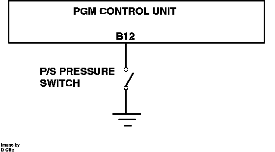

Power Steering Pressure Switch: Description and Operation
Power Steering Pressure Switch Operation:

The power steering switch is threaded into the power steering pressure hose in the rear of the engine compartment. When high steering load is present, (i.e. low speed maneuvering), the switch closes and ground ECU terminal B12. The ECU uses the signal to modify idle speed control to prevent stalling.